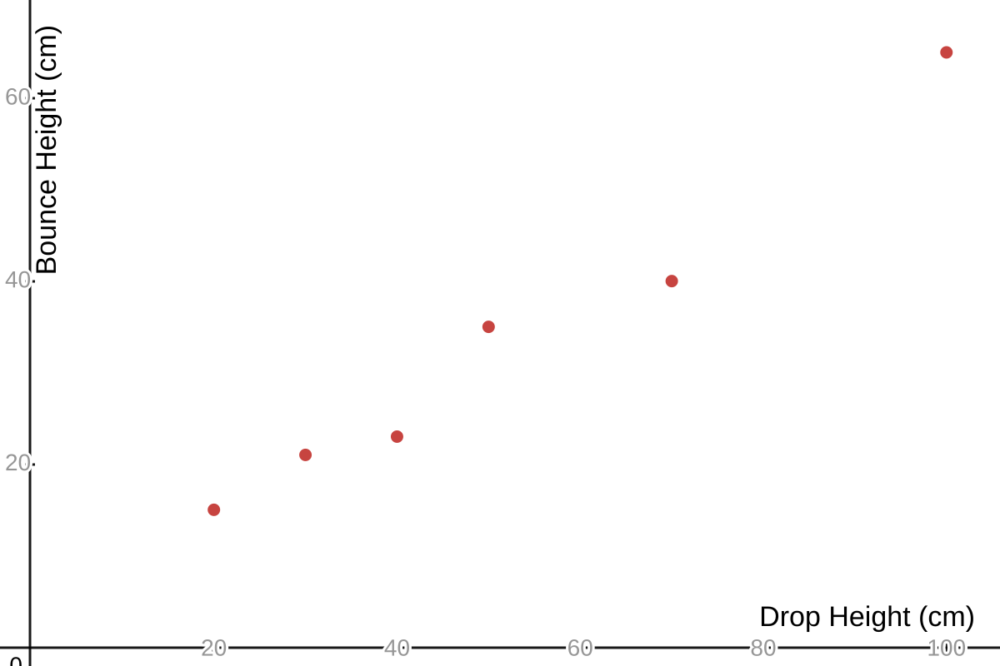
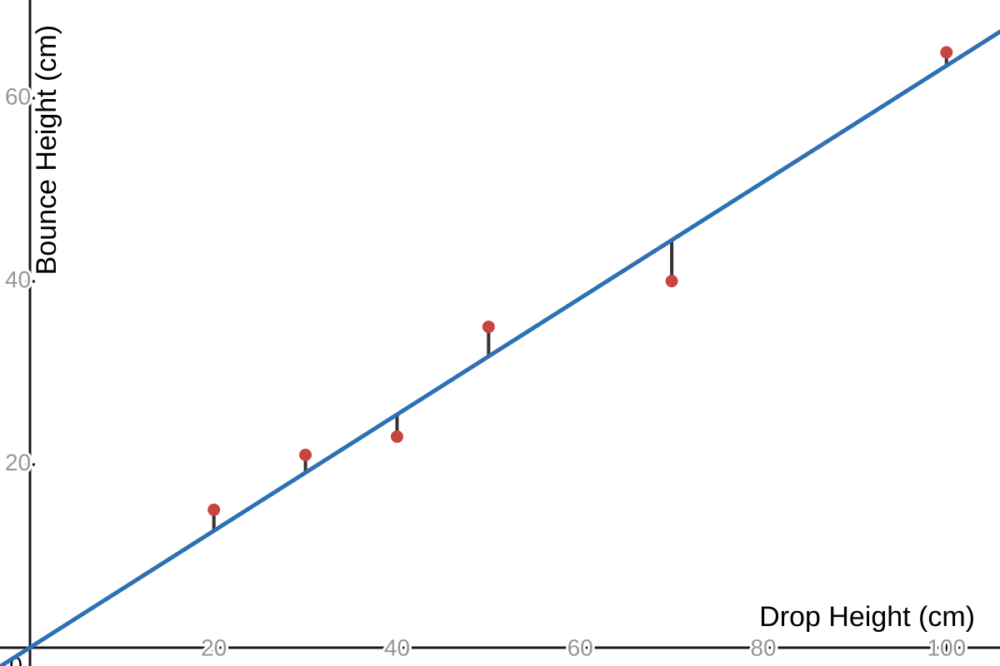

The video of this talk is available at https://www.youtube.com/watch?v=DB6iyKSbzsE and the slides are at regression.html.
A nice video that explores the parameter space of a linear regression is here: https://www.youtube.com/watch?v=my3lsV-VQjs
When we drop a bounce ball from drop height \(h_{drop}\) and recorde the bounce height \(h_{bounce}\), we observe a highly linear relationship.

Fitting a line to this data might look like this:
where the line corresponds to the model \(\hat{h}_{bounce} = \hat{\beta} h_{drop}\) for some (slope) parameter \(\hat{\beta}\). For every data point \((h_{drop}, h_{bounce})\), the predicted bounce height \(\hat{h}_{bounce}\) is the \(y\) value of the line, \(\hat{\beta} h_{drop}\). Finding the "best" fit line to our data means finding the value of \(\hat \beta\) that gives us the "best" predictions.For every \(i^{th}\) data point \((h_{drop}, h_{bounce})\), the error \(e_i\) of our model is: \[e_i = h_{bounce} - \hat{h}_{bounce}\] or \[e_i = h_{bounce} - \hat{\beta} \hat{h}_{drop}\] One way to assess the total error for \(n\) data points is with the sum of squared errors (SSE): \[SSE = \sum_{i=1}^{n} e_{i}^{2}\] Use the utility at https://jedediyah.github.io/csta2026/regression.html#/9 to get a sense of what minimizing the SSE looks like!